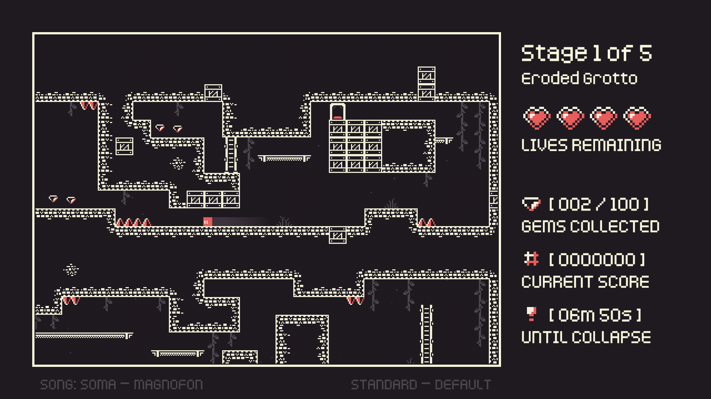
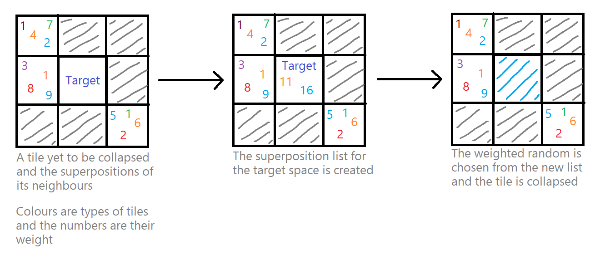

Cavern Collapse | 2022

Project Details
Technical
Development
Overview
Game
Cavern Collapse is a rogue-like 2D platformer about descending into an everchanging procedural cavern to uncover a hidden treasure in the depths. Each run the player passes through 5 different stages of variable difficulty, each different from the one that came before. Bounce, dash and climb your way up ladders, across platforms and between spikes as you continue your descent into the abyss. The game also comes with an included level editor which can be used to "teach" the procedural generator used for level creation in-game, thus allowing the player to collaborate with the game's code and influence the kind of levels they will face during gameplay.
The beginning of a descent attempt in-game.
Production
The game was designed, developed and produced solely by myself over the course of 6 weeks, with music by Harry Towell (aka. Magnofon) and most of the original art and sounds by KenneyNL. The game was originally created for the Complex Game Systems assessment in the second year of my programming course at AIE. The project came about as a means of developing a modular implementation of the Wave Function Collapse algorithm, which I'll be covering in more detail later in this write-up. Over the course of the project, I kept myself on schedule by using an ongoing list of tasks ordered by priority and updated daily, as well as using Git for version control between on-campus and remote work from home.
Contribution
On this project I contributed...
About the code
Wave Function Collapse
The primary algorithm used for choosing which tiles to place when generating a level is called Wave Function Collapse. The basis of the algorithm follows a few simple steps:
- The empty tile spaces are evaluated to find the one with the fewest remaining valid possibilities based on the neighbouring tiles.
- A tile is then chosen from the list of possibilities, this list is called a superposition.
- The tile is placed, and spaces surrounding this tile have their superposition list updated.
This process is repeated until the entire grid is filled, or no superpositions remain in any list in the grid. The end result of this algorithm is a locally coherent arrangement of tiles, in which the connection between neighbouring tiles is always valid. This is desirable for procedural level creation, as players have a set of expectations about the layout of a given stage. For example, spikes should be attached to surfaces and walls should connect together cleanly.
To resolve (or "collapse") a superposition into a tile to be placed in the level, first a union operation is completed between the superposition sets of all neighbouring tiles, to construct a new combined list for the uncollapsed target tile. To complete this, each list is compared, and as long as an element exists within each of the lists, their weights are added together and written to the superposition set for this space. Then a weighted random is performed between all of the elements in this combined list, to choose the final tile to collapse this set into.
An iteration of the Wave Function Collapse algorithm, step by step.
But where do these superposition lists even come from?
In the case of my implementation, a ruleset is constructed which encompasses all of the directional superpositions of each tile variant in the game's tileset, (eg. Foliage1/Above/Platform2). These rules are derived from the arrangement of tiles in a set of pre-made examples. In my case, I built a small level editor to construct these example stages, which are used to organically derive the rules for tile arrangement during level generation, thus producing natural-looking levels.
The samples used to train the level generation algorithm in Cavern Collapse.
The ruleset is stored as a 3-dimensional array of integers, where the first dimension is the tile ID of the central space, the second dimension represents the direction of the neighbour in relation to the center, and the third dimension stores the tile ID of the neighbour space. When accessed, this 3D array returns the number of times this arrangement occurs in the example stages which were analysed (ie. the weight of this tile arrangement). This setup allows you to query whether a tile placement is valid (if the weight is above 0), but also how effectively logically it follows the patterns in the sample data (higher = better). For example, if you wanted to know what could be placed above a gem and how commonly this occurs, then you could find that information!
Level Generation
The level generator I made for Cavern Collapse took up the majority of development time, as it was likely the most complex system in the project. It takes 30 different steps to generate each stage, heavily implementing Wave Function Collapse for most of it.
Here is a distilled rundown of the most critical steps:
- Load sample data and construct ruleset
- Create top-to-bottom room sequence, similarly to Spelunky
- Create left-to-right reserved path within each room
- Connect rooms vertically by reserving tiles through connecting floors and ceilings
- Build border around map and along the floor of each room
- Wave function collapse for walls, then cleanup
- Wave function collapse for platforms/ladders, then cleanup
- Wave function collapse for spikes/gems, then cleanup
- Verification for gems and path accessibility
- Wave function collapse for decorations, then cleanup
- Place start and exit doors
- Generate colliders, place prefabs like gems and the player, and then final setup
Here's a short clip of what it looks like when you put all of that together. This is a beginner-level cavern, the smallest level variant in the game.
The game generating a small cavern, slowed down a bit.
Working with The Algorithm
The reason that wave function collapse is so powerful is that in a way, it's process can be quite similar to a that of a human solving a puzzle, or designing a level. It takes the knowledge of the current state of the puzzle and the available pieces into account when working on the solution. In the case of programming this, the generator needed to have some idea of where to start from, so to ensure a valid path through the level and appropriate wall structure as the biggest priorities, I had them placed before the first iteration of the algorithm even begun. Reserved spaces along the critical path were placed as blank "air" tiles to prevent walls blocking the path, and the border of the map and bottom of each room were set as interior wall tiles. This ensured the basic structure conformed to my goal for the stage outcome, one main path from top to bottom, with smaller bonus routes containing extra collectables branching off from it. These interior walls were grown outward from the starting pieces, branching into the final level which the player gets dropped into each stage. In this way, the level is grown organically from a semi-curated template to ensure consistency, but based on the design factors of the desired stylistic outcome.
You'll most likely have noticed that each iteration of Wave Function Collapse is followed by a cleanup where things get shuffled around a bit, and this was one of the biggest take-aways for me during the project. While powerful, Wave Function Collapse isn't a perfect algorithm, and tends to generate a lot of nonsense as well as general coherence. This stands to reason, level design isn't an easy thing for a human to do quickly, and programming an algorithm for it to be done procedurally isn't an easy thing either. For my implementation, I found that it was most effective to treat blank space as a tile of its own, so that gaps between walls and other features may still be interpreted by the algorithm. This had a side effect however, of also creating unresolvable situations in which non-replaceable air would generate in one direction and some other exposed structure in the other. Eventually I got the levels working effectively with the player controller, and after tons of playtesting it finally felt right.
One last thing...
There's so much more I could write about this project, but it's gotten far too technical already. If you're another programmer working on a similar problem and need to find some answers, or you'd just like to know more, feel free to contact me! I'd be happy to help out!
Thank you for reading!
Feel free to check out the store page for the game on Itch.io or simply return to the home page.